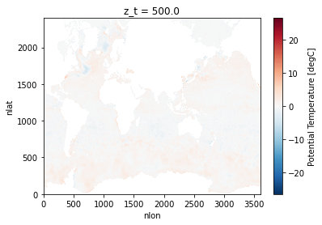
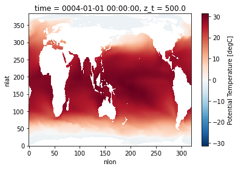

All Posts
Workshop - From Jupyter Notebook to Web Server: Automating Container Deployments with GitHub Actions
- 28 June 2024
The ESDS Events Working Group is hosting a hybrid workshop on August 8, from 9am-noon.
Link to the event page in Sundog
Workshop - From Jupyter Notebook to Web Server: Containerizing Interactive Visualizations
- 07 May 2024
The ESDS Events Working Group is hosting a hybrid workshop on June 20th, from 9am until noon.
Link to the event page in Sundog
2024 ESDS Annual Event Recap
- 01 March 2024
The ESDS Events Working Group hosted the 2024 ESDS Annual Event January 18-19th in a hybrid format at the NSF NCAR Mesa Lab and online.
This blog post shares a brief overview and resources from the event.
2024 Earth System Data Science (ESDS) Annual Event
- 21 November 2023
ESDS is hosting an annual event on January 18th and 19th (Thursday-Friday). This event will be hybrid, in-person in NCAR’s Mesa Lab Main Seminar Room as well as virtual.
The event will be hosted at the Mesa Lab Main Seminar Room, located at 1850 Table Mesa Dr, Boulder, CO 80305. In order to attend the event virtually, registered participants will be receiving an email from Taysia Peterson roughly one week prior to the event with Zoom details.
ESDS at SciPy 2023
- 28 August 2023
ESDS had a sizable presence at SciPy 2023 this year! Many of us shared our work in a formal capacity through tutorials, talks, and posters–most of these were recorded and have resources available publicly online, which we’ve compiled below. There were also lots of opportunities to make connections with people doing work in the broader scientific Python ecosystem outside of our organization. It was very cool to see lots of different tools, projects, and workflows.
The conference proceedings from this and prior years are now published as well. You can find published slides, posters, and articles for some of the conference’s presentations at the link above.
Thinking through CESM data access
- 16 August 2023
We want to read a large number of netCDF files, combine them to form a single dataset, and then analyze that. How do we think about it?
In pseudocode we want
Analyzing and Visualizing CAM-SE Output in Python
- 15 August 2023
We demonstrate a variety of options for analyzing and visualizing output from the Community Atmosphere Model (CAM) with the spectral element (SE) grid in Python. This notebook was developed for the ESDS Collaborative Work Time on Unstructured Grids, which took place on April 17, 2023. A recap of the related CAM-SE discussion can be found here.
Regrid CAM-SE output using map file

ESDS Office Hours Support
- 10 May 2023
A core goal of the ESDS community is to enhance the efficiency of the NCAR/UCAR workforce by fostering deeper collaboration across labs. ESDS Office Hours help achieve this goal by serving a dual purpose: helping scientists to more quickly overcome software challenges, which allows them to refocus on their scientific pursuits, and fostering connections among workers across different labs. Office Hours assistants benefit from having a scientific colleague as a “client”, enabling them to refine scientific use cases for their software development and fostering a greater sense of camaraderie. ESDS is always open to additional Office Hours assistants with diverse skill sets to join our team. If you are interested in becoming a part of the ESDS Office Hours team or if you would like to explore a similar service for your own team, this blog post is for you.
If you’re curious about the ESDS Office Hours system, see our previous New Office Hours Appointment System blog post).

Recap: Unstructured Grid Collaborative Work Time
- 05 May 2023
ESDS hosted our first Collaborative Work Time event on April 17, 2023. The topic of the session was “Working With Unstructured Grids”. Our goal is to encourage cross-lab collaboration and build lasting science-software partnerships.
The event was hybrid with in-person attendees in the Damon Room at the Mesa Lab. A lucky overlap with the Improving Scientific Software conference, meant that collaborators from the Department of Energy were also able to attend in-person.

Using Kerchunk with CESM Timeseries Data on the Cloud
- 15 March 2023
We benchmark reading a subset of the CESM2-Large Ensemble stored as a collection of netCDF files on the cloud (Amazon / AWS) from Casper. We use a single ensemble member historical experiment with daily data from 1850 to 2009, with a total dataset size of 600+ GB, from 13 netCDF4 files.
We read in two ways:
Virtual aggregate CESM MOM6 datasets with kerchunk
- 07 March 2023
This notebook is adapted from the work by Lucas Sterzinger (an NCAR SIParCS intern in 2021).
This notebook was updated to
Recap of a (Re)Introduction to Earth System Data Science (ESDS) Across NCAR/UCAR/UCP
- 19 December 2022
ESDS hosted a (Re)Introduction to Earth System Data Science (ESDS) Across NCAR/UCAR/UCP on November 10-11, 2022. This blog post serves to consolidate and share resources from that event.
The final agenda from the event can be found here.
Regridding using xESMF and an existing weights file
- 06 December 2022
A fairly common request is to use an existing ESMF weights file to regrid a Xarray Dataset (1, 2). Applying weights in general should be easy: read weights then apply them using dot or tensordot on the input dataset.
In the Xarray/Dask/Pangeo ecosystem, xESMF provides an interface to ESMF for convenient regridding, includiing parallelization with Dask. Here we demonstrate how to use an existing ESMF weights file with xESMF specifically for CAM-SE.

Calculating Temporal Averages with GeoCAT-comp vs Xarray
- 29 November 2022
With temporally large datasets, computing seasonal and annual averages are a great ways to summarize the data and make it easier to manage and understand. You may want to take hourly, daily, or monthly data and compute seasonal or annual averages.
When using data that has a daily or finer resolution (e.g. hourly), calculating an annual average is simple. Every day and hour has the same length, so an unweighted average will work.

Preparation for a (Re)Introduction to Earth System Data Science (ESDS) Across NCAR/UCAR/UCP
- 02 November 2022
ESDS is hosting a (Re)Introduction to Earth System Data Science (ESDS) Across NCAR/UCAR/UCP on November 10th and 11th (Thursday-Friday). This event will be hybrid, in-person in NCAR’s Mesa Lab Main Seminar Room and virtual over Zoom or Google Meet. More information is in this previous post.
This tutorial is designed to be run from Binder. You can do that by navigating to the GeoCat Tutorial Repository and selecting “Launch Binder” in the README.md.
A (Re)Introduction to Earth System Data Science (ESDS) Across NCAR/UCAR/UCP
- 18 October 2022
ESDS is hosting a (Re)Introduction to Earth System Data Science (ESDS) Across NCAR/UCAR/UCP on November 10th and 11th (Thursday-Friday). This event will be hybrid, in-person in NCAR’s Mesa Lab Main Seminar Room and virtual over Zoom and/or Google Meet.
Please register to the event through the Registration Form by Friday, November 4, 2022!
New Office Hours Appointment System
- 10 August 2022
The ESDS office hours are moving to an appointment scheduling page.
The previous office hours system was two one-hour blocks at the same time every week via a Zoom call where software engineers sit in and await scientists to show up and receive help. This was not ideal because some weeks no one showed up (which eventually leads to attrition of software engineers), and other weeks many people showed up and could not all receive the individualized help they needed. Also we had many software engineers and scientists with scheduling conflicts during these two static time blocks. You may have noticed these are no longer on the ESDS calendar.
What I’ve learned about debugging
- 12 May 2022
It can be easy to get discouraged when working on a coding problem. When you think you’ve solved a problem in your code, it turns out that you misunderstood or didn’t fully grasp the root of the problem. Then, you’re facing a new coding challenge where the computer continually returns a different result than expected. This can turn into a game of cat and mouse as you chase down the bugs that are in the way of your new shiny feature being implemented.
When this happens to me, I feel disheartened and imposter syndrome creeps up - and then I can shut down, wishing that coding was easier. For me, the silver lining here is that a lot of my work is geared towards educating geoscientists to be better coders. Despite always being STEM-oriented in my passions and work, coding can be hard. This is the experience for a lot of people, and certainly is the experience for a lot of the scientists I have worked with. Reflecting on my own struggles in my own software development practices, can help me teach coding from empathetic and helpful perspectives.

The Python Tutorial Series Returns this Summer!
- 11 May 2022
The Python Tutorial Series returns on every other Thurday at 1 PM Mountain starting May 26th with the 5-part “Your First” Python Tutorial series. The first lesson, “Opening a .txt File”, covers how to create your first Python script to open some simple data. Some tutorials will be 1-off lessons on specific topics, while others will span multiple sessions.
We will begin by following through the Xdev tutorial website, designed to introduce Python to scientists who already have a good deal of programming experience, albeit with a different language. Our main audience is NCAR scientists, but anyone who has some experience working in the terminal and understanding of basic coding structures who wants geoscience-applicable examples will find this tutorial series helpful and reqarding.
Debugging dask workflows: Detrending
- 31 March 2022
Detrending - subtracting a trend, commonly a linear fit, from the data - along the time dimension is a common workflow in the climate sciences.
Here’s an example

Batch Processing Jupyter Notebooks with Papermill
- 17 March 2022
Jupyter notebooks are really good for doing the heavy lifting of data analysis by:
Allowing you to showcase your work in a single place. You can see the complete “paper trail” of what was done. This includes the code, results, visuals and the narrative accompanying your analysis.

“Thinking with Xarray” Tutorial
- 04 March 2022
The NCAR/UCAR virtual Python Tutorial Seminar Series continues with an intermediate-level lesson on analysis with Xarray titled “Thinking with Xarray” on March 9th at 1 PM Mountain Standard Time led by Deepak Cherian.
Xarray is an open source project and Python package that makes working with multi-dimensional arrays simple and effient by introducing labels in the form of dimensions, coordinates and attributes on top of raw NumPy-like arrays. See the Xarray Documentation
Sparse arrays and the CESM land model component
- 24 February 2022
An underappreciated feature of Xarray + Dask is the ability to plug in different array types. Usually we work with Xarray wrapping a Dask array which in turn uses NumPy arrays for each block; or just Xarray wrapping NumPy arrays directly. NumPy arrays are dense in-memory arrays. Other array types exist:
sparse for sparse arrays

MetPy Tutorial
- 07 February 2022
The NCAR/UCAR virtual Python Tutorial Seminar Series continues with a lesson on MetPy on February 9th at 1 PM Mountain Standard Time led by Drew Camron.
MetPy is a collection of tools in Python for reading, visualizing, and performing calculations with weather data. See the MetPy Documentation
Intake-ESM Tutorial
- 02 December 2021
The Project Pythia Python Tutorial Seminar Series continues with the Intake-ESM Tutorial on Wednesday, December 8 at 1 PM Mountain Standard Time. This session will be led by Max Grover.
The content for this tutorial is hosted in the .ipynb notebook file(s) within the tutorial directory of this repository.
ESDS Update November 2021
- 02 December 2021
November was an active month! There were a couple of ESDS Forum talks, a variety of answered Python questions during office hours, and a Python tutorial!
Check out the following ESDS update for the month of November 2021.

Correctly Calculating Annual Averages with Xarray
- 19 November 2021
A common component of people’s workflows is calculating annual averages, which helps reduce the frequency of datasets, making them easier to work with. Two of the data frequencies you may be looking to convert to annual include:
Daily (365 days in each year)

Processing Data from the NCAR Mesa Lab Weather Station
- 12 November 2021
There is a weather station located at the Mesa Lab, situated along the Foothills of the Rockies in Boulder, Colorado!
By the end of this post, you will be able to plot an interactive visualization of the weather data collected at the Mesa Lab, as shown below!

Object Oriented Programming Tutorial
- 08 November 2021
The NCAR/UCAR virtual Python Tutorial Seminar Series continues with a lesson on Object Oriented Programming on November 10th at 1 PM Mountain Standard Time led by Dr. Kevin Paul.
The content for this seminar tutorial is hosted on Kevin’s Object Oriented Programming Tutorial Repository.
ESDS Update October 2021
- 28 October 2021
October has been an active month! There were a variety of talks, a variety of answered Python questions during office hours, and a Python tutorial!
Check out the following ESDS update for the month of October 2021.

Advanced Plotting Tutorial
- 25 October 2021
The NCAR/UCAR virtual Python Tutorial Seminar Series continues with Advanced Plotting Techniques on Wednesday, October 27th at 1 PM Mountain. This session will be led by Anissa Zacharias.
The content for this tutorial is hosted on Anissa’s matplotlib-tutorial GitHub repository (the same repository as her previous plotting tutorials).
Using Intake-ESM's New Derived Variable Functionality
- 22 October 2021
Last week, Anderson Banihirwe added a new feature to intake-esm, enabling users to add “derived variables” to catalogs! This is an exciting addition, and although this has not been included in a release yet, you are welcome to test out the functionality!
Keep in mind that this is an initial prototype and the API is likely to change.
Reading WRF data into Xarray and Visualizing the Output using hvPlot
- 15 October 2021
The typical data workflow within the Python ecosystem when working with Weather Research and Forecasting (WRF) data is to use the wrf-python package! Traditionally, it can be difficult to utilize the xarray data model with WRF data, due to a few challenges:
WRF data not being CF-compliant (which makes it hard for xarray to properly construct the dataset out of the box using xr.open_dataset)

CESM2-Large Ensemble Reproduction of a Figure from Kay et al. 2015 Using Intake-ESM and hvPlot
- 08 October 2021
This Jupyter Notebook demonstrates how one might use the NCAR Community Earth System Model v2 (CESM2) Large Ensemble (CESM2-LE) data hosted on AWS S3. The notebook shows how to reproduce figure 2 from the Kay et al. (2015) paper describing the CESM LENS dataset (doi:10.1175/BAMS-D-13-00255.1), with the LENS2 dataset.
There was a previous notebook which explored this use case, put together by Joe Hamman and Anderson Banihirwe, accessible on the Pangeo Gallery using this link. The specific figure we are replicating is shown below.

ESDS Progress Over the Past Few Months
- 01 October 2021
The first ESDS “meeting” took place in mid March 2021, with the kickoff event being the CGD town hall (here is the blog post detailing the topics at that meeting). Since that meeting, we have moved forward, holding a variety of Work in Progress talks, partnering with Xdev to offer Python Tutorials, and publish a series of blog posts aimed at documenting scientific workflows here at NCAR.
Most of our blog posts thus far have been focused on Python tutorials, workflow examples, or conference summaries. One new type of post we will be posting now are monthly summaries on ESDS activities. Since we have not posted one yet, we grouped up all of our activities since early March. Going forward, we will post on a monthly basis!

Reimagining Diagnostics Through the Use of the Jupyter Ecosystem
- 24 September 2021
Typically, diagnostics packages are written with following structure, using script-based workflows
Read files and do some preprocessing

Benchmarking Performance of History vs. Timeseries Files
- 17 September 2021
In this example, we will look at how long reading data from the Community Earth System Model (CESM), applying calculations, and visualizing the output takes using the following packages:
Regridding High Resolution Observations to a High Resolution Model Grid
- 10 September 2021
In this example, we will cover how to leverage a useful package from the Pangeo Ecosystem, xESMF. One important note when using this package, is make sure you are using the most up-to-date documentation/version, a few years ago, development moved to the pangeo-data branch of the package, installable using the following:
For this example, we will download a file from the World Ocean Atlas, which includes a variety of ocean observations assembled from the World Ocean Database.
GeoCAT-Comp Tutorial
- 03 September 2021
The NCAR/UCAR virtual Python Tutorial Seminar Series continues highlighting the functionality developed by NCAR’s GeoCAT team with GeoCAT-comp on September 8th at 1 PM Mountain Daylight Time led by Alea Kootz.
The content for the GeoCAT-Viz tutorial is hosted on Alea’s GeoCAT-Comp Tutorial Repository.
Comparing Atmospheric Model Output with Observations Using Intake-ESM
- 27 August 2021
Comparing models and observations is a critical component of climate diagnostic packages. This process can be challenging though - given the number of observational datasets to compare against, and the difference in spatiotemporal resolutions. In the previous iteration of the diagnostics package used for atmospheric data from the Community Earth System Model (CESM), they used pre-computed, observational datasets stored in a directory on the GLADE filesystem (/glade/p/cesm/amwg/amwg_diagnostics/obs_data)
Within this example, we walk though generating an intake-esm catalog from the observational data, reading in CESM data, and compare models and observations
Examining Diagnostics Using Intake-ESM and hvPlot
- 20 August 2021
In previous weeks, we have looked at building Intake-ESM catalogs from history files and visualizing CESM output using Holoviews and Datashader, but this week we are putting together a few of those pieces to visualize a comparison between model runs.
One of the first ESDS blog posts looked at building an interactive dashboard to look at plots, using high resolution ocean model output as the dataset. One of the limitations of that approach is that the images are static - we are pulling in pngs, and rending on the page, as opposed to more interactive options. In this example, we will read in data generated from ecgtools, from a directory only accessible via NCAR’s high performance computing center.
Plotting with GeoCAT Tutorial
- 19 August 2021
The NCAR/UCAR virtual Python Tutorial Seminar Series continues with two sessions highlighting the functionality developed by NCAR’s GeoCAT team: 1) Plotting with GeoCAT on Wednesday, August 25th led by Anissa Zacharias and 2) GeoCAT-comp September 8th at 1 PM Mountain Daylight Time led by Alea Kootz. More information on the GeoCAT-comp tutorial TBA.
The content for the Plotting with GeoCAT tutorial is hosted on Anissa’s Plotting with GeoCAT Tutorial Repository.
Plotting CESM Data on an Unstructured Grid using Geoviews and Datashader
- 13 August 2021
This week, during Xdev office hours, Steve Yeager raised a question regarding plotting unstructured grid data within Python. He was interested in plotting output from the Community Atmosphere Model, which supports unstructured grids, essentially a combination of triangles allowing for higher resolution in certain parts of the domain. This can be adventageous when wanting to achieve the benefits of high resolution within the primary domain, while maintaining the global scale of the model. This week, NCAR Science tweeted a great explanation of how revolutionary this capability is in the context of resolving processes over Greenland.
Unstructured grids can be difficult to plot directly within Python since they do not follow the typical lat, lon (x, y) convention. There is some preprocessing that needs to be applied before plotting.
Using Intake-ESM to Analyze Data from CESM2-LE
- 06 August 2021
In mid June, the CESM2 Large Ensemble dataset was made available to the public. This model was run in collaboration with the IBS Center for Climate Physics and the National Center for Atmospheric Research This dataset includes 100 ensemble members, at one degree spatial resolution, with each ensemble member including data from 1850 to 2100. If you are interested in learning more about how this ensemble was setup, be sure to check out the main webpage or read the pre-print of Rodgers et al. 2021 which describes this dataset in detail.
One of these challenges with this dataset is dealing with the massive amount of output. The data are available through the NCAR Climate Data Gateway and via the IBS OpenDAP Server. There is also a subset of the dataset available on the GLADE file system on NCAR HPC resources available within the directory /glade/campaign/cgd/cesm/CESM2-LE/timeseries/.

Project Pythia Portal Overview
- 30 July 2021
Last year, the Project Pythia team was formed to “provide a public, web-accessible training resource that will help educate current, and aspiring, earth scientists to more effectively use both the Scientific Python Ecosystem and Cloud Computing to make sense of huge volumes of numerical scientific data.”
The team is formally a collaboration between three main organizations, although contributors come from throughout the scientific Python community:

SciPy Conference 2021 Takeaways
- 26 July 2021
A couple weeks ago, I had an opportunity to (virtually) attend the Scientific Computing with Python (SciPy) Conference! The conference consisted of three primary sections:
Tutorials (Monday/Tuesday)
Dask Tutorial UPDATED DATES
- 23 July 2021
The NCAR/UCAR virtual Python Tutorial Seminar Series continues with a 2-part introduction to the Python package dask on Wednesday, July 28th and August 11th at 1 PM Mountain Daylight Time. These sessions will be led by Anderson Banihirwe.
Note: These dates have changed from the previous Dask Tutorial announcement.
Dask Tutorial
- 08 July 2021
The NCAR/UCAR virtual Python Tutorial Seminar Series continues with a 2-part introduction to the Python package dask on Wednesday, July 14th and August 11th at 1 PM Mountain Daylight Time. These sessions will be led by Anderson Banihirwe.
The content for this tutorial is hosted on Anderson’s Xarray Tutorial Github Repository. This is the same repository as the previous Xarray tutorials.
Scaling Python with Dask Class Takeaways
- 02 July 2021
This week, I had the opportunity to attend the Scaling Python with Dask class offered by Coiled. The class provided an overview of a variety of topics, including:
Parellelizing Python Code

Creating Model Documentation Using Jupyterbook and Intake-esm
- 25 June 2021
A common step to any project is documenting your data and your data workflow. Fortunately, open tools in the scientific python ecosystem make that much easier! In this example, we will cover creating your github repo, creating the catalog, visualizing the catalog, and generating a static webpage you can share with collaborators!
This week’s post is quite detailed, so just a warning! If you would like to look at the finished product, check out the following

CESM Diagnostics Discussion
- 17 June 2021
Every year, NCAR holds the Community Earth System Model (CESM) Workshop which brings together the CESM community to discuss relavant updates from the working groups as well as featured speakers and cross-working group discussions.
During the Software Engineering Working Group (SEWG) session, following a variety of talks, there was an open discussion regarding the current state of CESM diagnostics and future plans for collaboration.

Creating Visualizations of Intake-ESM Catalogs
- 11 June 2021
A common initial task when working with a new dataset is figuring out what data is available. This is especially true when working with climate ensembles with several components and time-frequency output (ex. Community Earth System Model Large Ensemble, CESM-LE). Here, we will examine different methods of investigating this catalog
Here, we will use intake-esm and graphviz, which can be installed using the following (including jupyterlab too!)

Xarray Tutorial
- 04 June 2021
The NCAR/UCAR virtual Python Tutorial Seminar Series continues with a 2-part introduction to the Python package xarray on Wednesday, June 9th and June 23rd at 1 PM Mountain Daylight Time. These sessions will be led by Anderson Banihirwe.
The content for this tutorial is hosted on Anderson’s Xarray Tutorial Github Repository. However, since final edits are being made to these notebooks we ask that you please wait until after 1 PM MDT on June 8 to download the materials (the Tuesday before the first session). This will ensure that you have the latest version of the notebooks.
Building an Intake-esm catalog from CESM2 History Files
- 04 June 2021
As mentioned in a couple of ESDS posts (intake-esm and Dask, debugging intake-esm), intake-esm can be a helpful tool to work with when dealing with model data, especially CESM. One of the requirements for using intake-esm is having a catalog which is comprised of two pieces:
A table of the relevant metadata (ex. file path, variable, stream, etc.)
Dask Distributed Summit 2021 Takeaways
- 28 May 2021
Cloud optimized datasets help improve speed of analysis
Entire 4 TB datasets open up in a few seconds
Pandas Tutorial
- 19 May 2021
The NCAR/UCAR virtual Python Tutorial Seminar Series continues with an introduction to the Python package pandas on Wednesday, May 26th at 1 PM Mountain. This session will be led by Drew Camron and Max Grover.
The content for this tutorial is hosted on Max’s NCAR Pandas Tutorial Github Repository
Debugging Intake-ESM Process for Reading in CMIP6
- 14 May 2021
This post was motivated by a post from Steve Yeager @sgyeager, who ran into an error when attempting to read in CMIP6 data via intake-esm.
For those who are unfamiliar with intake-esm, be sure to read over the documentation! The user guide even includes an entire portion of their site on looking at CMIP6 data. These resources would be a great place to start.
Git and GitHub Tutorial
- 07 May 2021
The NCAR/UCAR virtual Python Tutorial Seminar Series continues with an introduction to the Python package Git and GitHub on Wednesday, May 12th at 1 PM Mountain. This session will be led by Kevin Paul.
The purpose of this seminar is to cover just some of the common content needed to understand and use git and GitHub for collaboration on software. This is not meant to be an introduction to git or GitHub.
Paired Programming using VS Code
- 06 May 2021
A common task when developing notebooks or packages is collaborating with others. It can be challenging to do this when using JupyterHub since two people cannot access the same notebook at same time. One solution to this is to use Visual Studio Code (VS Code) to remotely access Casper/Cheyenne, use a virtual meeting plaform (Zoom, Google Meet), and interactively collaborate on development.
This process includes a few steps:
How to Use xarray.map_blocks for Vertical Interpolation of a 3D Field
- 28 April 2021
Within this example, we cover how to use xarray.map_blocks to calculate the mixed-layer depth within the CESM POP model output.
This calculation is “embarassingly parallel” such that each calculation is done within a single a column. The calculation should be easily computed within each column across the model domain. This is where map_blocks can be used to improve the performance of this metric.

Cartopy Tutorial
- 26 April 2021
The NCAR/UCAR virtual Python Tutorial Seminar Series continues with an introduction to the Python package cartopy on Wednesday, April 28th at 1 PM Mountain. This session will be led by Michaela Sizemore.
The content for this tutorial is hosted on Michaelsa’s Cartopy Tutorial Github Repository
Indexing unstructured grids with the Power of Xoak
- 23 April 2021
This week, there a post within the Zulip regarding how to deal with indexing CAM-SE data. The tricky part here is that is an unstructured grid, where there is only one column to the data, ncol.
Here is an example of the dataset we are working with. Notice that both lat and lon have the same dimension, ncol.
NCAR-Jobqueue
- 15 April 2021
Last week, we added posts detailing how to configure Dask using the new PBS scheduler on Casper. In this week’s example, we provide an example of the recent updates to ncar-jobqueue, added by Anderson Banihirwe, which allow users to easily configure dask on Casper without having to add many extra steps.
You must update the package to use the newest updates. You can update using conda!
Object Oriented Programming Tutorial
- 09 April 2021
The NCAR/UCAR virtual Python Tutorial Seminar Series continues with an introduction to Object Oriented Programming on Wednesday, April 14th at 1 PM Mountain. This session will be led by Austin Kootz.
The content for this tutorial is hosted on Austin’s oop_hrrr_tutorial GitHub repository.
An Example of Using Intake-ESM
- 09 April 2021
This past week, NCAR CISL updated the Casper Node to use PBS instead of Slurm for scheduling jobs. This led a post in which an example of spinning up dask clusters on the new configuration. This was also an opportunity to dig into dask, and try applying it to a sample task, specifically looking at ecosystem variables in the CESM-LE dataset, using notebooks included in Matt Long’s krill-cesm-le repository, modified by Kristen Krumhardt.
Here, we spin up our dask cluster. At first, running this notebook resulted in a killed worker error. After further expection, we noticed that additional resources would be needed to read in the notebook since the data are so large (on the order of ~1-2 TB). Increasing the individual worker to a higher amount (ex. 256 GB) solved the issue. Scale up to as many workers as you think are neccessary for the calculation (this may take some trial and error).
Using Dask on the New Casper PBS Scheduler
- 06 April 2021
Casper will complete a transition from Slurm to the PBS Pro workload manager on April 7, 2021. This has implications for how to spin up a Dask cluster, including via the NCAR Jupyterhub.
Below is an example script suitable for the new configuration using the PBSCluster function from dask_jobqueue. Note that the ncar_jobqueue package requires updating to work with the new configuration.
The Importance of Software Citation
- 02 April 2021
One of the questions that came up during the ESDS Town Hall was how do scientists/developers get credit toward their efforts in developing open-source code? Software that is used by the wider community should received the acknowledgment and recognition it deserves.
Data and academic publication citations have become popular in the literature, but often times, software is not cited… which can be arguably just as important to the work as the data.
Matplotlib Tutorial FAQ
- 30 March 2021
Here is a compilation of questions and issues that arose during the Matplotlib session of the Python Tutorial Seminar Series.
Q. Are all the colormaps perceptually ordered?
NCAR-CGD ESDS Town Hall
- 26 March 2021
Last week, there was a town hall focused on gathering input on the Earth System Data Science initiative at NCAR. The meeting began with an introduction about the initiative, the vision, goals, and how the team is planning to start working toward these goals.
The Question/Answer portion of the town hall was very informative and brought up some great topics for discussion. They have been collected from both the chat and Google Doc, sorted by category.
NumPy Tutorial FAQ
- 19 March 2021
Here is a compilation of questions and issues that arose during the Numpy session of the Python Tutorial Seminar Series.
The live video recording of this content can be found here.
Matplotlib Tutorial
- 19 March 2021
The NCAR/UCAR virtual Python Tutorial Seminar Series continues with an introduction to the Python package matplotlib on Wednesday, March 24th at 1 PM Mountain. This session will be led by Anissa Zacharias.
The content for this tutorial is hosted on Anissa’s matplotlib-tutorial GitHub repository. Primarily direct your attention to the matplotlib-tutorial.ipynb.
HiRes-CESM Interactive Dashboard Example
- 19 March 2021
In this example, our goal is to create an interactive dashboard, using images already output on a remote server.
We are specifically interested in looking at plots created using the HighRes-CESM-Analysis repository.
Jupyter Notebooks Tutorial FAQ
- 03 March 2021
Here is a compilation of questions and issues that arose during the Jupyter Notebooks session of the Python Tutorial Seminar Series.
Q. I installed Miniconda but it doesn’t seem to be working. conda is not a recognized command. What should I do?
Numpy Tutorial
- 26 February 2021
The NCAR/UCAR virtual Python Tutorial Seminar Series continues with an introduction to the Python package numpy on Wednesday, March 10th at 1 PM Mountain. This session will be led by Austin Kootz.
Check your conda install if this is the first tutorial in the series you are joining us for with conda --version and if necessary install by following these instructions
Your First Package Python Tutorial FAQ
- 19 February 2021
Here is a compilation of questions from the fourth and fifth sessions (“Your First Package”) of the Python Tutorial Seminar Series which covered refactoring code into seperate modules and packages, using an external built-in module (math), and how to publish your package
Q. Should we add __init__.py to .gitignore?
Python Tutorial Seminar Series - Spring 2021
- 16 February 2021
The “Your First” Python Tutorial Series is over, but the tutorial seminar series continues.
All events are at 1 PM Mountain
Python Tutorial FAQ - Part 3
- 18 November 2020
Here is a compilation of questions from the third session of the Python Tutorial Seminar Series which covered writing functions as well as f-string formatting.
Q. Seeing how 2/2 returns 1.0 instead of 1, is the numeric type automatically determined from the inputs or do you have to force it?
Python Tutorial FAQ - Part 2
- 05 November 2020
Here is a compilation of questions and issues that arose during the second session of the Python Tutorial Seminar Series, on creating a data dictionary. After this first short series, these FAQ sections will be added to the Xdev tutorial website
Q. Why is list[0:10] the first 10 elements, not 11?
Python Tutorial FAQ
- 20 October 2020
Here is a compilation of questions and issues that arose during the first session of the Python Tutorial Seminar Series. Hopefully all attendees feel that their issues are addressed here.
Q. I am having issues running the command:
curl -kO https://sundowner.colorado.edu/weather/atoc8/wxobs20170821.txt.
What should I do?
Tutorial Seminar Series
- 18 September 2020
Because we are unable to host an in-person tutorial for this fall season, the Xdev team has decided to switch to a virtual seminar series. We will be hosting one hour tutorial sessions scheduled for the 2nd and 4th Wednesdays of each month at 1 PM Mountain starting in October. The first tutorial session, covering how to create your first Python script, will be on October 14th. Some tutorials will be 1-off seminars on specific topics, while others will span multiple seminar sessions.
Remote tutorials offer their own challenges; no one from our team can walk around the room to notice if anyone needs technical help or one-on-one assistance during a challenging topic. We believe that one hour sessions make it easier for participants to reach out and get the help they need to catch up before the next session of a multi-part seminar, so that we can more effectively reach our education goals.
Writing multiple netCDF files in parallel with xarray and dask
- 29 June 2020
A typical computation workflow with xarray consists of:
reading one or more netCDF files into an xarray dataset backed by dask using xr.open_mfdataset() or xr.open_dataset(chunks=...),

Templating isn’t just for Web Developers!
- 08 May 2020
Recently, I found myself rambling on in an unprepared attempt to explain templating to a colleague of mine who had no prior experience with frontend design. It didn’t take me long to realize that my explanation was convoluted and confusing, not that I stopped talking, mind you. Attribute that to being unprepared, or sleep deprived (i.e., child still not sleeping through the night!), or just a bad teacher.
Regardless, I decided to point them to a tutorial online that certainly must exist, but after a brief Google search (which you should read as, “I didn’t find anything in the first page of search results!”), all I could find were tutorials for frontend developers. And if you aren’t an HTML expert, or already have experience with Flask or Django, teaching templating in those contexts can actually be more confusing than illuminating.
We are Xdev!
- 09 December 2019
More than a year ago, Matthew Long and I started shopping around the idea that a lot of what we do here at NCAR, as well as how we do it, needed a bit of a facelift. Our pitch was simple: As an institution that supports the geoscientific community by providing valuable datasets, supercomputing facilities, and computer models, NCAR needs to exemplify modern best practices in the development and use of these resources. We took inspiration from the remarkably effective Pangeo community, which continues to show enormous success with Open Source development when coupled with modern software best practices, and we started to develop a plan of how to help shift, albeit slowly, both NCAR and—though collaboration with the Pangeo community—the geoscience community toward a better future.
To implement our plan, Matt and I started to see how much benefit to NCAR it could be to have a small, Agile team that was dedicated to prototyping new technologies for the benefit of the rest of the organization and the rest of the geoscience community, as a whole, like the UK Met Office’s Informatics Lab. However, instead of just churning out technology, this group would also serve as an example to the rest of NCAR on how (and why) to use modern best practices (GitHub, continuous integration, test-driven development, etc.) for scientific software development. …and for science itself!
The Significance of Time
- 28 August 2019
Time is relative, as my coworker Anderson likes to remind me every time manipulating this coordinate proves to be relatively difficult.
This post is to be the first in a series of my struggles coming from an atmospheric science background and transitioning into software. My hope is that if I detail pain points and headaches I encounter along my journey, you won’t have to.